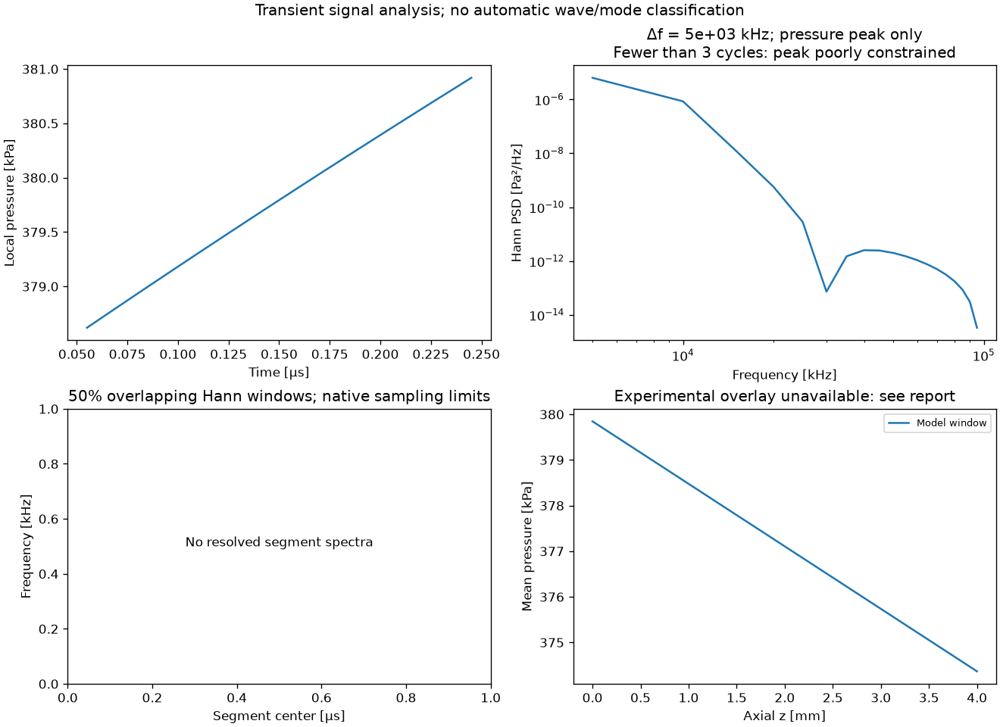
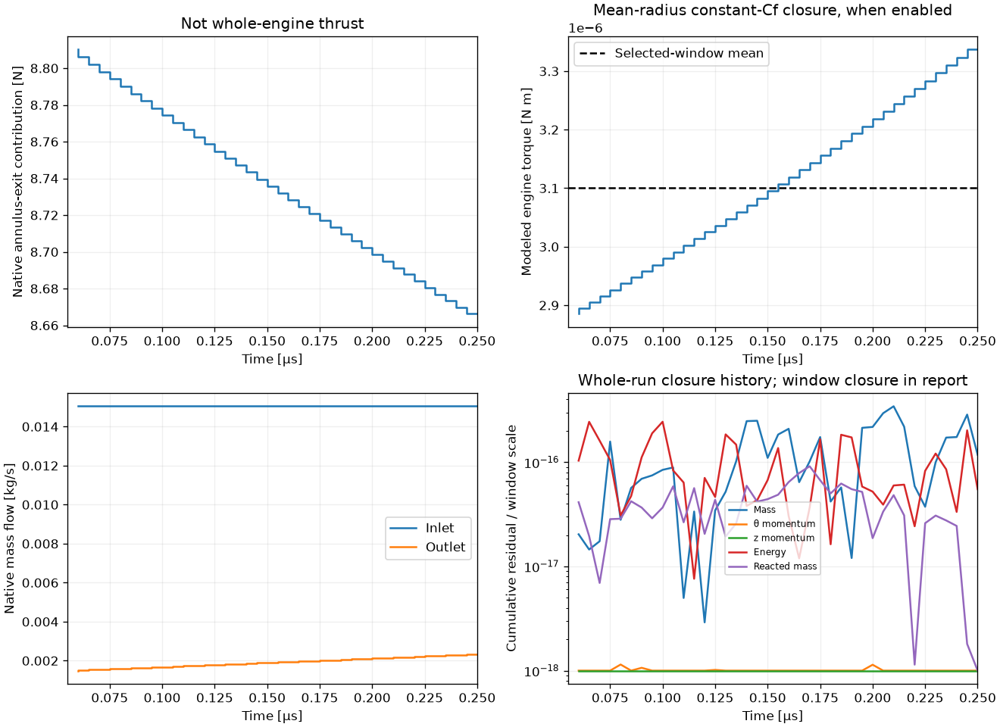
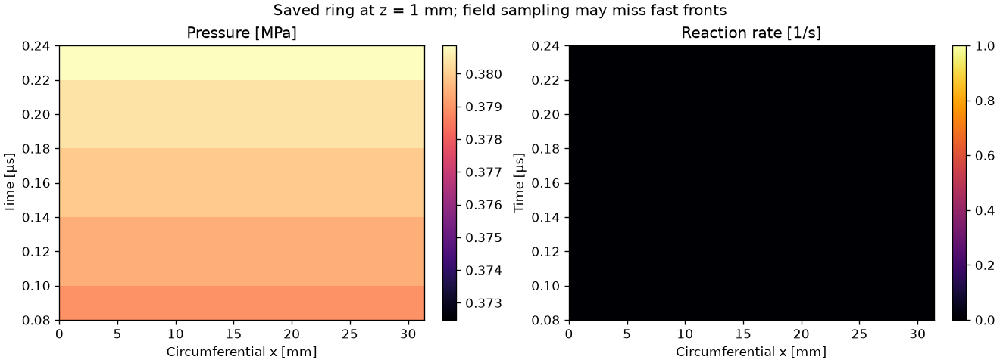
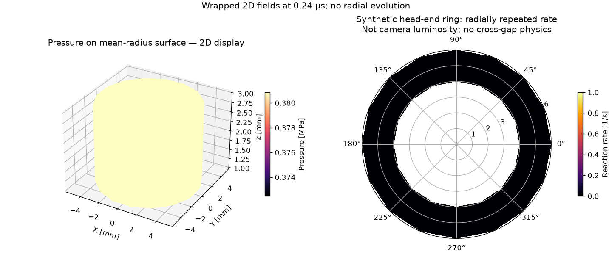
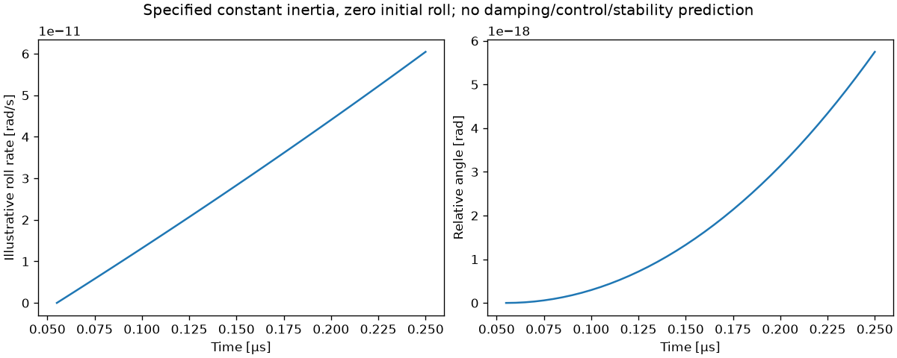

development_benchmark; selected window 0.055–0.25 µs. Committed step 61.
Report · JSON and provenance · History CSV
Playback uses equal display intervals; actual saved timestamps are shown. Re-run this read-only command into a new output directory to refresh a running case.




